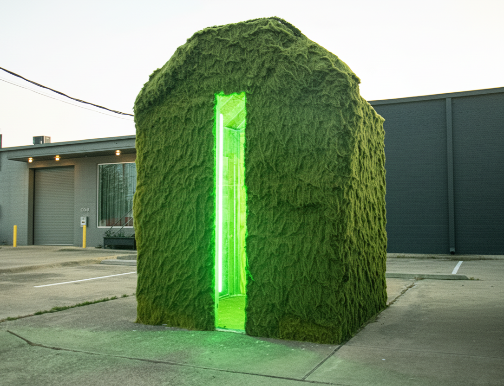
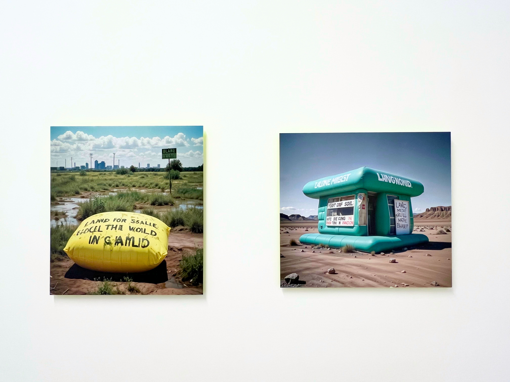

Cry Is the Land
Video Installation / Sculpture / Landscape

About the Work
Cry is the Land is a recent series that investigates narratives of undervalued land surveyors, frontiersmen, and warriors around the Trinity River near Dallas, Texas in the late nineteenth century.
Utilizing artificial intelligence, reclaimed materials, and artificial plants, the work confronts human experiences with nature, Western frontier mythologies, horror cinema, inflatable architecture, and monumentalism.
Through digital and constructed technological systems, Cry is the Land examines how urban environments carry histories of land, violence, transformation, and myth.


